Most of us have stared at our own living room at some point and thought, this feels kind of flat somehow. The fastest way to fix that is almost always a touch of green, the one color that reads as fresh, calm, and stylish all at once, with enough range to fit nearly any room.
Whether you want a bold, statement-making moment or just a whisper of natural calm, there's a shade of green that works. From rich emerald walls to soft sage accessories, it manages to feel both timeless and current without requiring a full renovation project.
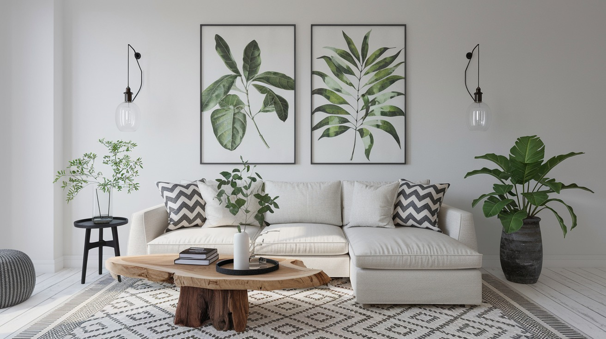
Govee Smart Pendant Light, Three-Layer RGBIC Lighting for Kitchen Island
Shop on Amazon13 Green Living Room Ideas Worth Trying
1. Mix Shades of Green for Depth
Starting strong: don't feel locked into a single shade of green. Mixing multiple tones creates real richness and makes a room feel layered and intentional rather than flat.
Pair deep forest green furniture with sage walls for contrast. Add olive pillows on a mint-toned couch for subtle depth. Mix dark green artwork with lighter green curtains for balance.
This technique is honestly what separates a flat, one-note room from one that feels genuinely designed, the same reason layering different textures of the same color in an outfit looks better than wearing one shade head to toe.
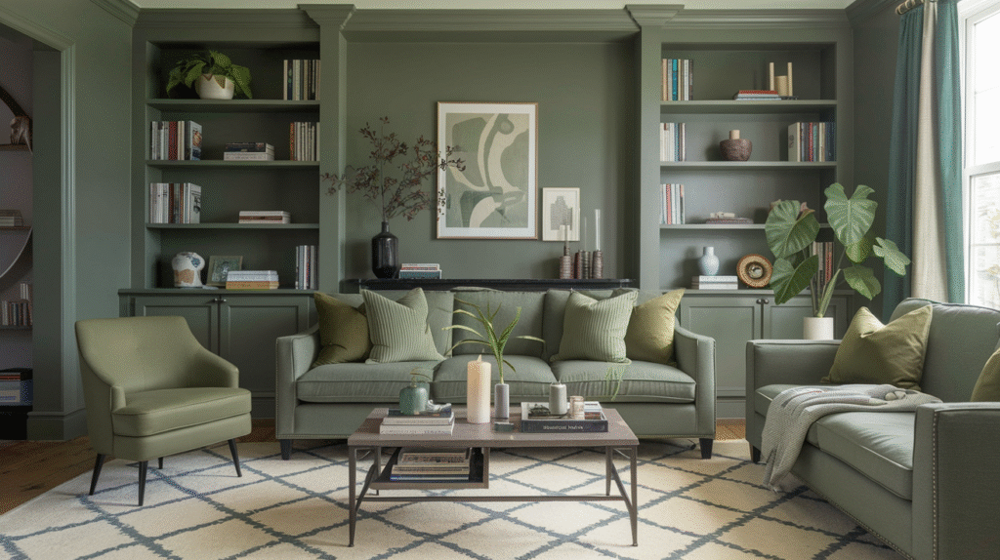
2. Make a Statement With a Green Ceiling
This one's a little bold, but hear it out: paint the ceiling, or bring green into the floor through a rug or tile. It's dramatic, and the payoff is genuinely worth it.
A sage or olive ceiling feels cozy and enveloping in a way a white ceiling never does. Green tile paired with neutral walls gives an artsy, unexpected twist. A painted green wood floor adds instant charm to a cottage or farmhouse space.
Everyone expects green walls. Almost nobody expects a green ceiling or floor, which is exactly why flipping the script here makes the room memorable instead of merely nice.
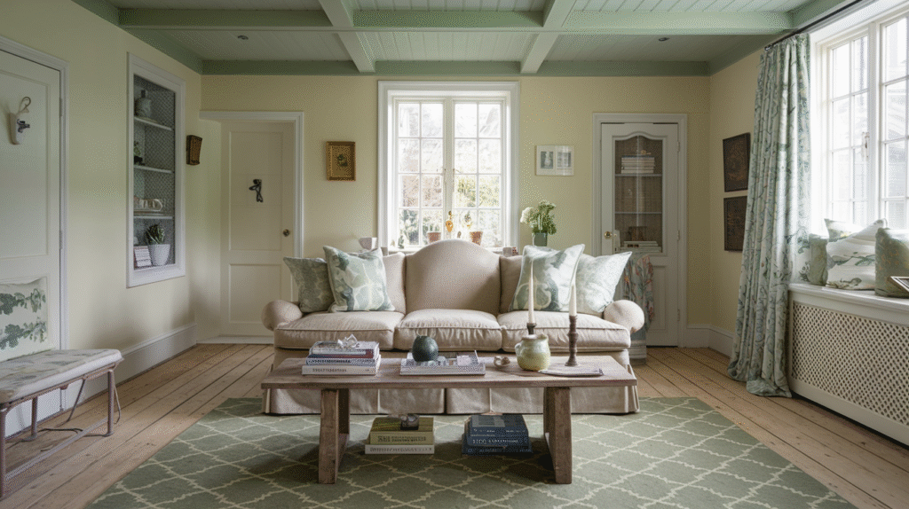

Pro Grade Paint Roller Kit with Paint Brushes, 4 Inch and 9 Inch Roller Covers
Shop on Amazon3. Style With Green Decorative Accessories
Here's the fun, low-commitment part: decorative accessories. Sometimes a few green touches sprinkled through the room are all it takes to tie everything together.
Green ceramic vases on a coffee table, emerald glass candle holders for a subtle glow, a green throw folded neatly in a basket, even books with green spines stacked for color, it all adds up.
Balance is the key here. Mix green accessories with metallics, neutrals, and natural textures so the room reads as curated rather than overdone, and swap them out freely whenever your mood shifts.
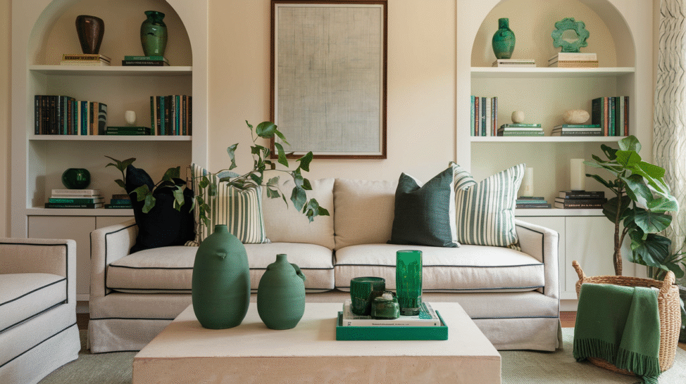
4. Create Depth With Green Trim and Accent Walls
Instead of painting every wall one solid green, try using it for trim, an accent wall, or built-ins. This is a move that genuinely doesn't get enough attention.
Green trim around windows and doors adds subtle interest without taking over. A deep green fireplace mantel becomes a striking focal point on its own. Green built-in shelves layered with books instantly add personality.
Small details like trim do a disproportionate amount of work, guests may not clock it immediately, but they'll leave thinking the room felt unusually put-together. That's the quiet power of a subtle green accent.
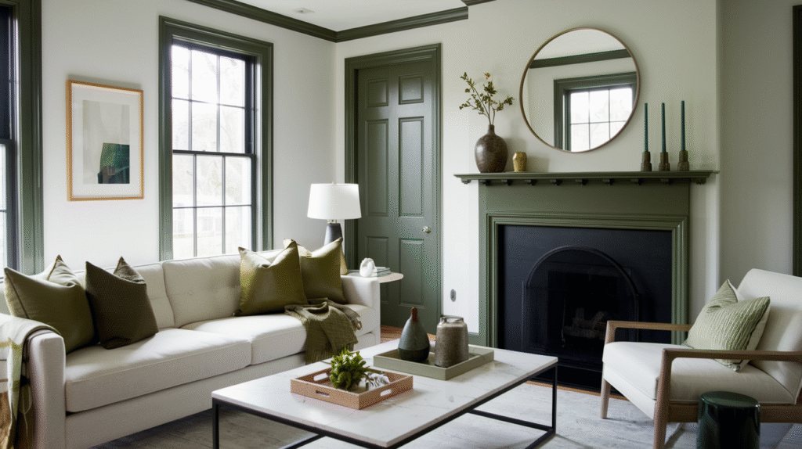

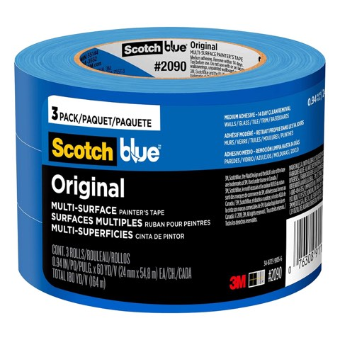
ScotchBlue Original Multi-Surface Painters Tape, 0.94 Inch x 60 Yds, 3 Rolls
Shop on Amazon5. Add a Pop of Green With Rugs
Want a real upgrade without a paintbrush or new furniture? A green rug is your best friend here. Rugs anchor a space and set its whole tone.
A dark green Persian-inspired rug leans classic and timeless. A light green geometric rug feels modern and minimalist. A distressed sage rug feels casual and cozy, great for a farmhouse or rustic room.
If committing feels risky, start with a patterned rug that mixes green with cream, beige, or navy, it blends in naturally while still adding that fresh pop of color.
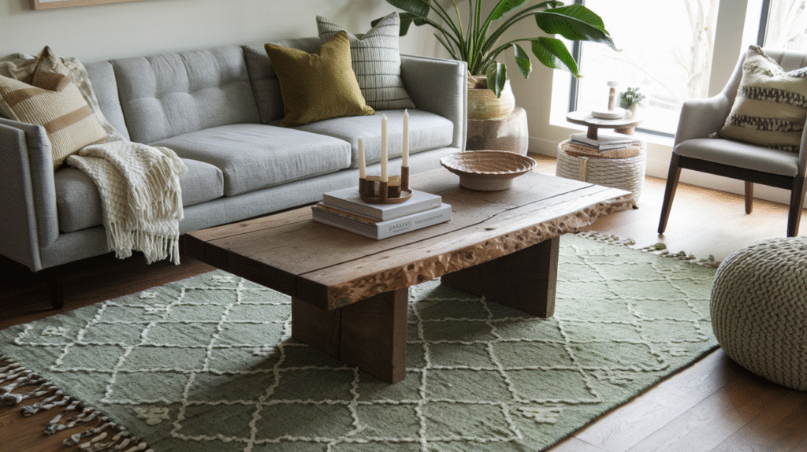
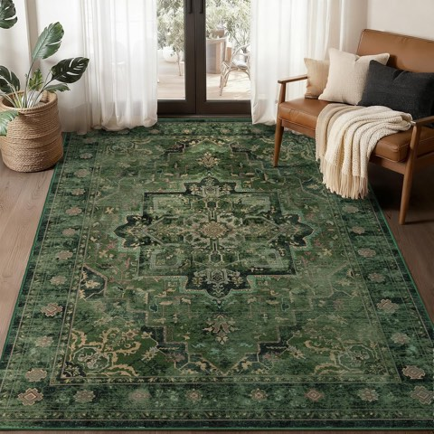
Vintage Dark Green Area Rug, 5 x 7 Ft, Traditional Distressed Medallion
Shop on Amazon6. Experiment With Green Curtains
Curtains get treated like a boring necessity, but they genuinely change how a room feels, and green curtains are one of the most effective ways to add color through them.
Light sage or mint curtains soften a room and filter natural light beautifully. Deep emerald velvet drapes read as genuinely luxurious, boutique-hotel territory. Patterned curtains with green accents tie in the rest of the room's palette.
Curtains work best when they complement rather than compete with your walls and furniture. Against neutral walls, bold green curtains can be the star; against already-green walls, something lighter keeps the look layered instead of heavy.
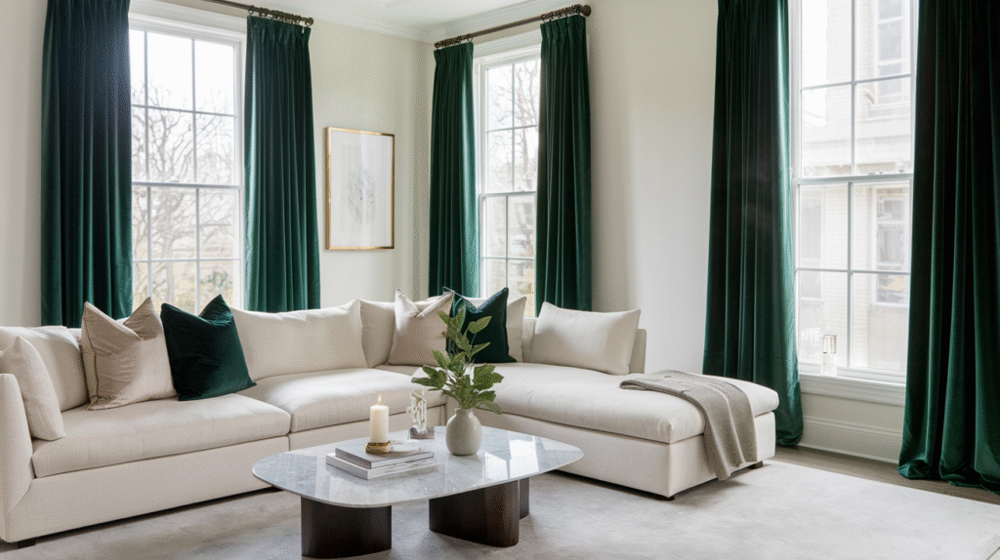
7. Play With Green Accent Chairs
You don't need a giant sofa to make a statement, green accent chairs do the trick just as well, with all the charm and none of the commitment of a full piece of furniture.
A pair of emerald velvet chairs adds instant symmetry and elegance. A sage armchair tucked into a corner feels cozy immediately. A green leather chair leans more masculine and sophisticated.
Accent chairs are the perfect balance of functional and stylish, and they're considerably easier to swap out than a sofa whenever you're ready for a change.
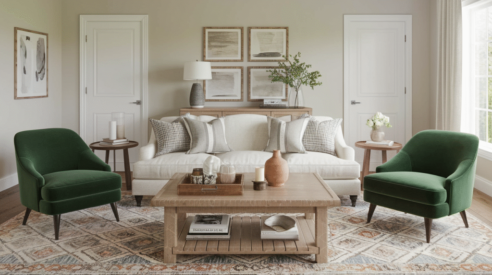
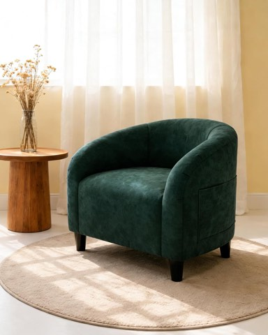
GarveeHome Velvet Accent Club Chair, Upholstered Barrel Chair with Soft Padded Arms
Shop on Amazon8. Balance With Natural Materials
One of the best green living room moves is pairing the color with natural materials like wood, rattan, or stone. It feels balanced and grounded, almost like bringing the outdoors inside.
Olive walls with an oak coffee table feel earthy and cozy. Sage pillows with rattan chairs feel fresh and airy. An emerald velvet sofa with marble side tables feels luxe with a natural twist.
Green already connects to nature on its own, so pairing it with raw, organic textures just makes intuitive sense, a green throw pillow genuinely reads richer sitting on a woven chair than a plain one.
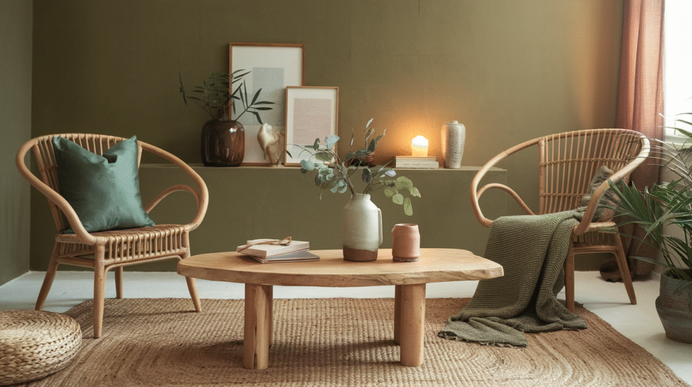
9. Accent With Green Artwork
A green living room doesn't have to involve furniture or paint at all. Artwork is an underrated, genuinely powerful way to bring color in.
Botanical prints in sleek black or wood frames, abstract pieces with bold green brushstrokes, or photography featuring lush landscapes all work beautifully and can be swapped out any time your style shifts.
There's something almost automatic about feeling calmer in a room with green artwork, it subconsciously connects back to nature. A pair of oversized botanical prints above a neutral sofa does more than most people expect.
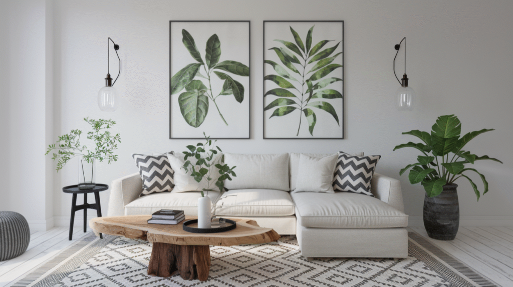
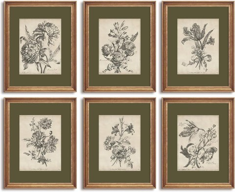
Vintage Floral Botanical Wall Art Prints, Antique Sketch Flower Canvas Decor
Shop on Amazon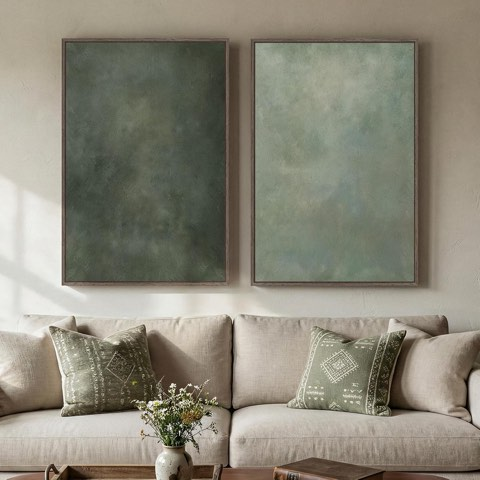
Large Framed Green Abstract Wall Art Set of 2, 24 x 36 Inch, for Living Room
Shop on Amazon10. Use Plants as Natural Green Decor
This one's almost too obvious to skip: plants are the ultimate green accessory. They bring color and, quite literally, bring the room to life.
A fiddle leaf fig is bold and sculptural in a corner. A snake plant is low-maintenance with a modern edge. Pothos drapes beautifully from a shelf. A monstera adds a tropical, playful touch with its oversized leaves.
Even without a green thumb, high-quality faux versions mixed in with real plants go completely unnoticed. Sometimes you just want the look without the watering guilt, and that's a completely fair trade.
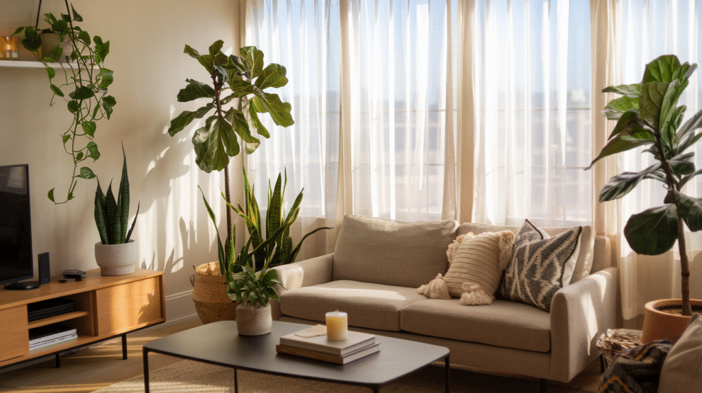
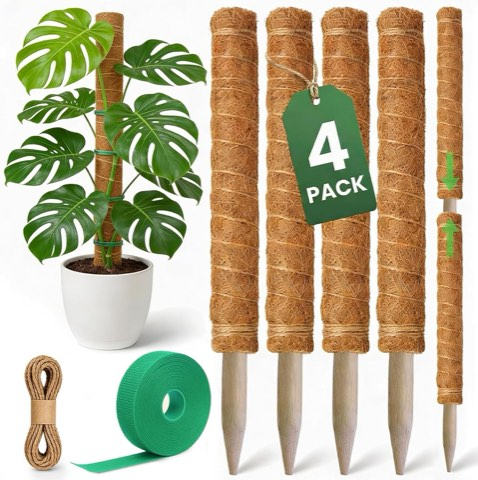
Moss Pole Monstera Plant Support, 16 Inch, 4 Pack, Stackable up to 48 Inch
Shop on Amazon11. Layer in Green Textiles
Not ready to commit to furniture or paint? Green textiles, throw pillows, blankets, rugs, are the easiest entry point into this whole trend.
Mix different shades of green pillows on a neutral sofa for depth without flatness. A green patterned rug ties the room together. A chunky knitted green throw adds texture and genuine coziness.
This is honestly the best way to test whether you actually like green in your space. Get bored of it, or decide it's not for you? Swap the pillows and throws back out without spending much at all.
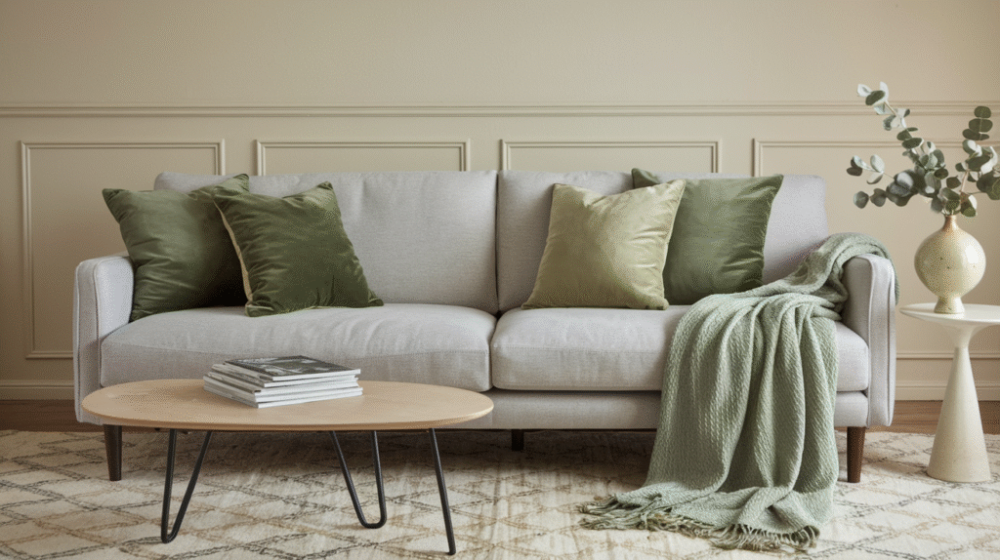
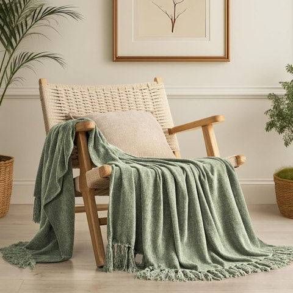
EverGrace Chenille Knit Throw Blanket for Couch, 50 x 60 Inch, Sage Green
Shop on Amazon12. Add Green Through the Sofa
If painting isn't your thing, a green sofa makes just as strong a statement. Think of it as the centerpiece of the room, the queen of the furniture lineup.
A velvet emerald sofa brings instant glam, especially paired with brass accents. A deep olive sectional leans warm and slightly boho. A sage linen couch feels light and airy, perfect for a modern farmhouse look.
The trick is keeping everything else neutral, beige rugs, white walls, natural wood accents, so the sofa gets all the attention it's earned. As a bonus, green upholstery hides minor stains far better than cream ever will.
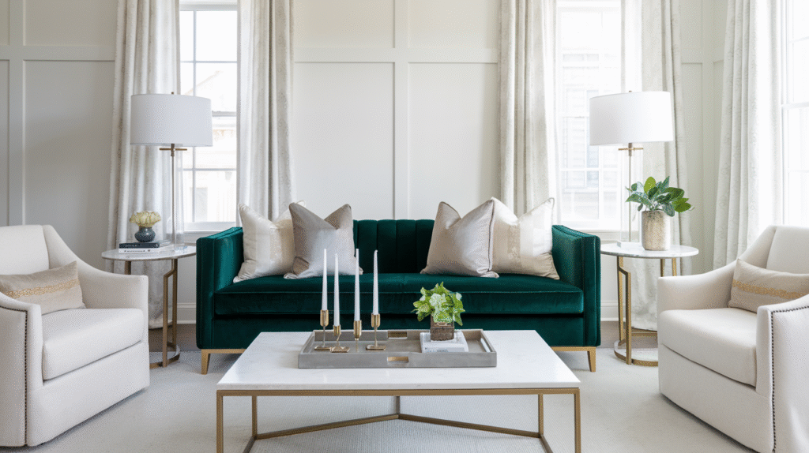
13. Go All-In With Green Walls
Painting your walls green is one of the most dramatic, lowest-effort ways to transform a living room. Nothing changes a space faster than color.
Deep emerald or forest green reads instantly luxurious, soft sage or mint keeps things calm and airy, and olive brings warmth without overwhelming the room. The shade you pick really does set the whole mood.
If painting all four walls feels like too much commitment, a single accent wall gets you most of the drama with a fraction of the risk, it's the easiest way to test the color before fully committing.
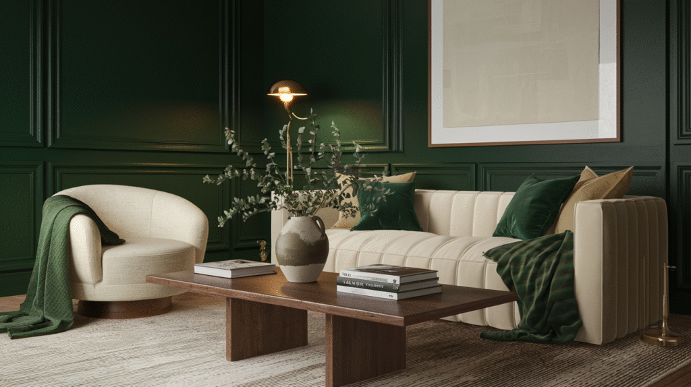

Final Thoughts
From bold emerald walls to the quietest sage accessories, there's a green out there for every mood and every style. What makes the color so powerful is its range, it can feel calming, energizing, luxurious, or earthy depending entirely on the shade and how you use it.
Start small if you're unsure, pillows, a plant, one framed print, and build from there slowly. And if it turns out green isn't your thing after all, swapping back to neutral costs you nothing more than a few accessories and an afternoon.